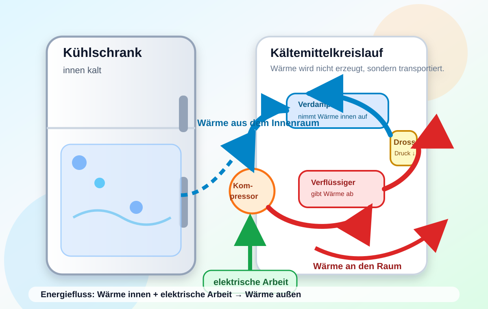

Kühlschrank und Wärmepumpe
Leitfrage: Warum wird es im Kühlschrank kalt, obwohl hinten Wärme abgegeben wird?

Kompetenz
Du erklärst den Kühlschrank als Wärmetransportmaschine und beschreibst den Kältemittelkreislauf.
Kompetenz
Du unterscheidest Beobachtung, Modell und Energiefluss.
Kompetenz
Du berechnest Energieverbrauch, Kosten und Leistungszahl in einfachen Anwendungen.
0. Lernstand: Was weißt du schon?
Ein Kühlschrank ist kein „Kälte-Erzeuger“. Er transportiert Wärme aus dem Innenraum nach außen. Prüfe zuerst, welche Begriffe du schon sicher verwenden kannst.
Begriffe aktivieren
Notiere zu zwei Begriffen je einen eigenen Beispielsatz.
Selbsteinschätzung
Tippkarten zur Differenzierung
Öffne die Karten nacheinander. Ab Tippkarte 2 gilt eine kurze Wartezeit.
1. Einstieg: Warum ist hinten Wärme?
Öffnet man einen Kühlschrank, spürt man kalte Luft. Berührt man vorsichtig die Rückseite oder den Bereich neben dem Kompressor, ist dieser oft warm. Das ist kein Widerspruch: Die Wärme aus dem Innenraum wird mithilfe elektrischer Energie nach außen gepumpt.
Eigenes Schema zum Lernpfad: Wärme wird mit elektrischer Arbeit transportiert.
Tippkarten zur Differenzierung
Nutze die Tipps, wenn du den Energiefluss noch nicht sicher formulieren kannst.
2. Vermuten: Was beeinflusst den Energieverbrauch?
Ein Kühlschrank muss mehr arbeiten, wenn viel Wärme in den Innenraum gelangt oder wenn die Temperaturdifferenz zur Raumluft groß ist.
Tür lange offen
Warme Raumluft gelangt hinein. Danach muss mehr Wärme heraus transportiert werden.
Warme Speisen
Die Speisen geben Wärme an den Innenraum ab.
Sehr niedrige Einstellung
Je größer die Temperaturdifferenz, desto stärker muss der Kreislauf arbeiten.
Tippkarten zur Differenzierung
Eine gute Vermutung ist überprüfbar und enthält eine Ursache.
3. Aufbau: Die vier Stationen des Kältemittelkreislaufs
Der Kühlschrank nutzt ein Kältemittel. Es verdampft bei niedriger Temperatur im Innenraum, wird anschließend komprimiert, gibt außen Wärme ab und wird durch eine Drossel wieder entspannt.
Kreislauf in vier Schritten
- Verdampfer: Das Kältemittel verdampft und nimmt dabei Wärme aus dem Innenraum auf.
- Kompressor: Das Gas wird zusammengedrückt. Druck und Temperatur steigen.
- Verflüssiger: Das warme Kältemittel gibt Wärme an die Raumluft ab und wird flüssig.
- Drossel: Der Druck sinkt. Das Kältemittel wird wieder kalt und kann erneut Wärme aufnehmen.
Merksatz
Ein Kühlschrank ist eine Wärmepumpe: Er transportiert Wärme von innen nach außen. Dafür benötigt er elektrische Arbeit.
Qaußen = Qinnen + Wel
Tippkarten zur Differenzierung
Nutze die Tippkarten, wenn du die Bauteile noch verwechselst.
4. Versuch: Verdunstungskühlung und Kompressionswärme
Kurzanleitung zum Schülerversuch: Verdunstung kühlt
Dieser Versuch zeigt ein Teilprinzip des Kühlschranks: Beim Verdampfen wird der Umgebung Energie entzogen.
Was erwartest du?
Was misst du?
Warum ändert sich die Temperatur?
Zusatzdemo: Kompressionswärme
Tippkarten zur Differenzierung
Nutze die Tipps für dein Mini-Protokoll.
5. Modell: Energiefluss und Leistungszahl
Ein Kühlschrank transportiert pro eingesetzter elektrischer Energie meist deutlich mehr Wärme aus dem Innenraum. Dafür nutzt man die Leistungszahl.
Mini-Modell: Wie viel Wärme wird transportiert?
Modell: ε = Qinnen / Wel und Qaußen = Qinnen + Wel.
Messdaten auswerten
Ein Kühlschrank wurde über einen Tag beobachtet.
| Beobachtung | Wert |
|---|---|
| Laufzeit des Kompressors | 8 h |
| mittlere elektrische Leistung während der Laufzeit | 120 W |
| Strompreis | 0,35 €/kWh |
Berechne die elektrische Energie pro Tag und die Kosten pro Tag.
Fehlerdiagnose
Eine fehlerhafte Erklärung lautet:
„Im Kühlschrank wird Kälte erzeugt. Die Wärme verschwindet im Kompressor.“
Auftrag: Markiere die falsche Aussage und formuliere sie fachlich richtig.
Tippkarten zur Differenzierung
Nutze die Tipps für Modell und Fehlerdiagnose.
6. Rechentraining: Energie, Kosten und Leistungszahl
Bearbeite die Aufgaben schriftlich. Schreibe immer zuerst die Formel auf und kontrolliere die Einheit.
Interaktiver Formeltrainer
Ein Kühlschrank hat während der Kompressorlaufzeit eine Leistung von 120 W. Der Kompressor läuft insgesamt 8 h pro Tag. Berechne die elektrische Energie pro Tag in kWh.
Hinweis: 120 W = 0,120 kW.
1. Tageskosten
Der Kühlschrank benötigt 0,96 kWh pro Tag. Der Strompreis beträgt 0,35 €/kWh. Berechne die Kosten pro Tag.
Kontrolllösung anzeigen
Kosten = 0,96 kWh · 0,35 €/kWh = 0,336 € ≈ 0,34 €.
2. Wärmebilanz
Der Kühlschrank entzieht dem Innenraum 2,7 kWh Wärme. Dafür werden 0,9 kWh elektrische Arbeit eingesetzt. Wie viel Wärme wird außen abgegeben?
Kontrolllösung anzeigen
Qaußen = 2,7 kWh + 0,9 kWh = 3,6 kWh.
3. Leistungszahl
Ein Gerät entzieht 3,2 kWh Wärme und benötigt 0,8 kWh elektrische Arbeit. Berechne ε.
Kontrolllösung anzeigen
ε = 3,2 kWh / 0,8 kWh = 4,0.
Tippkarten zur Differenzierung
Nutze die Tipps beim Rechnen.
7. Anwendungen: Kühlschrank, Klimaanlage und Wärmepumpe
Das Prinzip des Kühlschranks begegnet dir in vielen technischen Anwendungen. Immer geht es darum, Wärme mithilfe von Arbeit von einem Ort zu einem anderen zu transportieren.
Kühlschrank
Wärme wird aus dem Innenraum in die Küche transportiert.
Klimaanlage
Wärme wird aus dem Raum nach draußen transportiert.
Wärmepumpe
Wärme wird aus Luft, Erde oder Wasser aufgenommen und ins Haus abgegeben.
Entscheidungsaufgabe
Welche Maßnahme spart beim Kühlschrank am ehesten Energie?
Tippkarten zur Differenzierung
Nutze die Tipps für den Alltagstransfer.
8. Sicherung: Das bleibt hängen
- Ein Kühlschrank erzeugt keine Kälte, sondern entzieht dem Innenraum Wärme.
- Der Kältemittelkreislauf besteht aus Verdampfer, Kompressor, Verflüssiger und Drossel.
- Im Verdampfer nimmt das Kältemittel Wärme auf; im Verflüssiger gibt es Wärme ab.
- Die elektrische Arbeit des Kompressors wird zusätzlich als Wärme an den Raum abgegeben.
- Mit E = P · t lassen sich Energieverbrauch und Kosten abschätzen.
Begriff
Erkläre den Begriff „Verdampfer“ in einem Satz.
Modell
Zeichne die Energiepfeile für Innenraum, Kompressor und Raumluft.
Rechnung
Berechne mit E = P · t den Tagesverbrauch eines Geräts.
Transfer
Erkläre, warum eine Wärmepumpe mit dem Kühlschrank verwandt ist.
Deine Rückmeldung
Tippkarten zur Differenzierung
Nutze die Tipps für deine Sicherung.